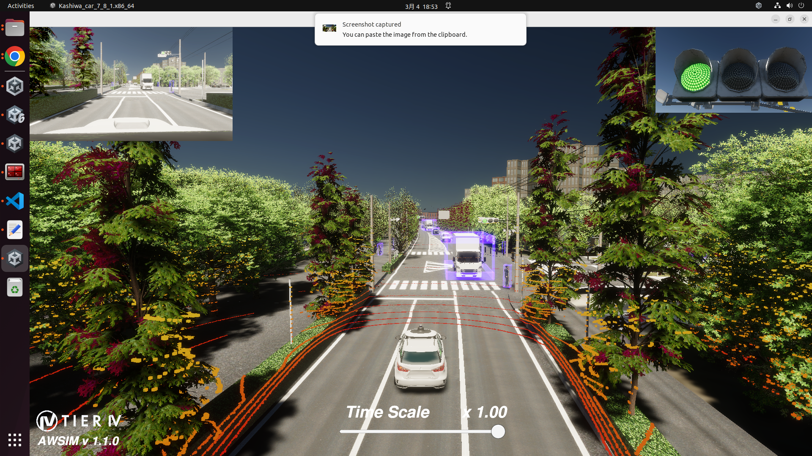
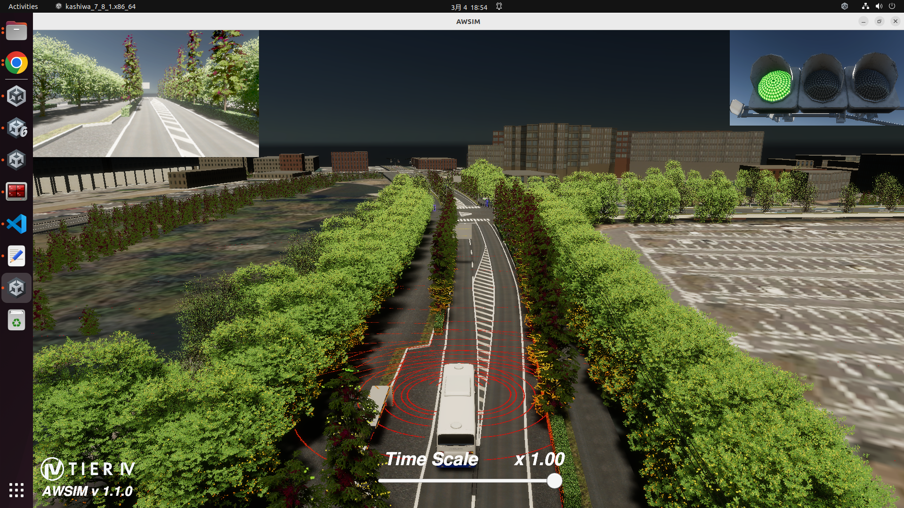
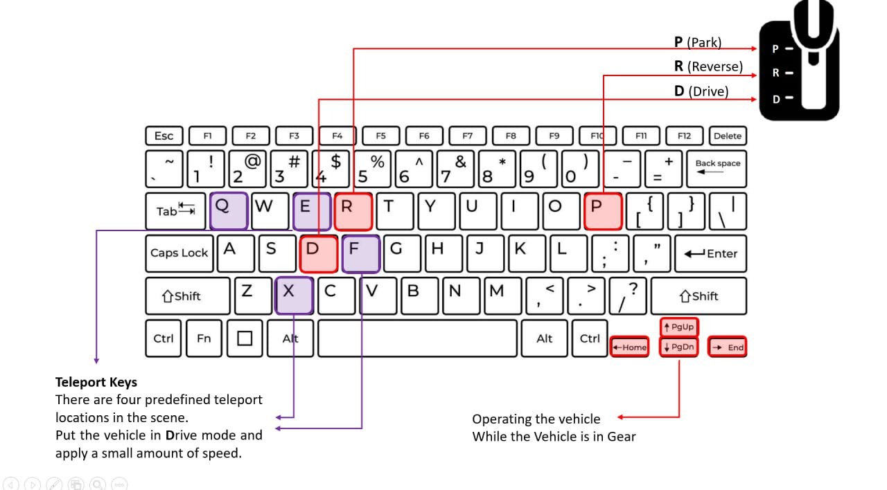
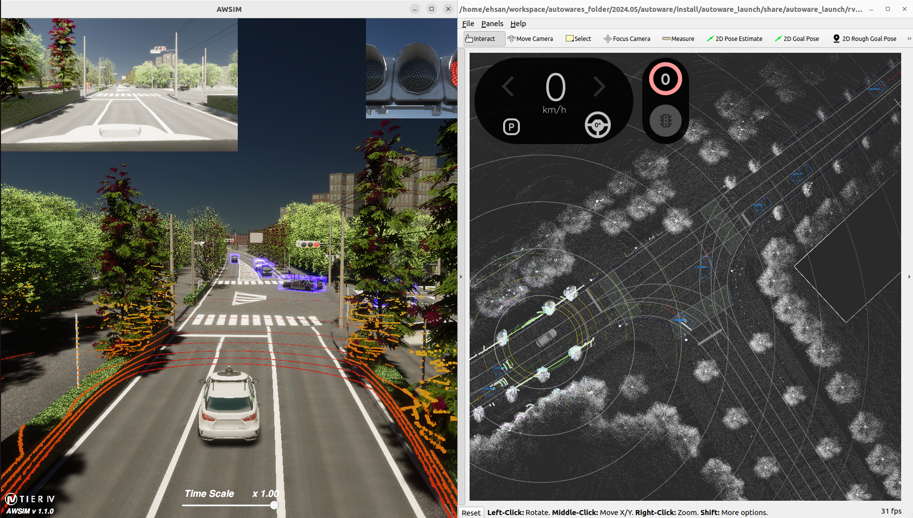
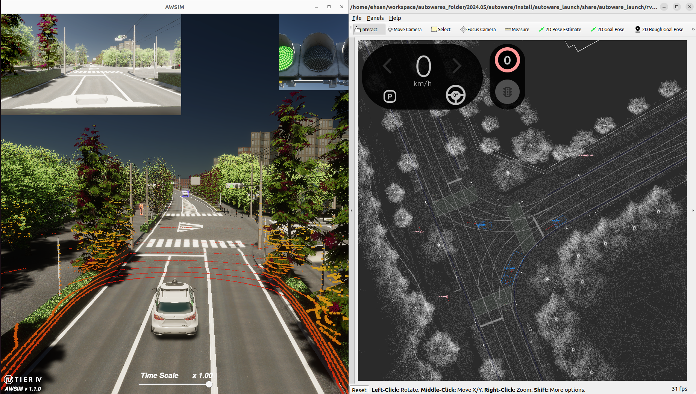

Quick Start Demo
This section provides a quick start tutorial for the V2X_E2E_Simulator on Ubuntu. Most of this documentation is based on the AWSIM documentation.
Demo configuration
Standard Vehicle Configuration
The simulation provided in the V2X_E2E_Simulator demo is configured as follows:
| V2X_E2E_Simulator Demo Settings | Details |
|---|---|
| Vehicle | Lexus RX 450h |
| Environment | Japan, Tokyo (Kashiwa) |
| Sensors | GNSS ×1 IMU ×1 LiDAR ×1 Traffic Camera ×1 |
| Traffic | Configurable via menu |
| ROS2 Version | Humble |
Bus Configuration
An alternative build is also available for the bus simulation:
| V2X_E2E_Simulator Demo Settings | Details |
|---|---|
| Vehicle | Bus |
| Environment | Japan, Tokyo (Kashiwa) |
| Sensors | GNSS ×1 IMU ×1 LiDAR ×3 Traffic Camera ×1 |
| Traffic | Configurable via menu |
| ROS2 Version | Humble |
PC specs
The following system requirements must be met for the simulation to function properly:
| Required PC Specs | |
|---|---|
| OS | Ubuntu 22.04 |
| CPU | 6 cores and 12 thread or higher |
| GPU | RTX2080Ti or higher |
| Nvidia Driver (Windows) | >=472.50 |
| Nvidia Driver (Ubuntu 22) | >=580 |
Localhost settings
The simulation relies on specific network configurations to ensure seamless communication between the V2X_E2E_Simulator and Autoware. To set up the necessary localhost environment, add the following lines to your ~/.bashrc file:
if [ ! -e /tmp/cycloneDDS_configured ]; then
sudo sysctl -w net.core.rmem_max=2147483647
sudo ip link set lo multicast on
touch /tmp/cycloneDDS_configured
fi
and these lines to ~/.profile or in either of files: ~/.bash_profile or ~/.bash_login:
export ROS_LOCALHOST_ONLY=1
export RMW_IMPLEMENTATION=rmw_cyclonedds_cpp
Warning
A system restart is required for these changes to work.
Start the demo
Running the V2X_E2E_Simulator simulation demo
To run the simulator, please follow the steps below.
-
Install Nvidia GPU driver (Skip if already installed).
- Add Nvidia driver to apt repository
sudo add-apt-repository ppa:graphics-drivers/ppa sudo apt update -
Install the recommended version of the driver.
sudo ubuntu-drivers autoinstallWarning
Currently, there are cases where the NVIDIA driver is incompatible, resulting in a segmentation fault. In such cases, please use the 580 version, which we have already tested.
-
Reboot your machine to make the installed driver detected by the system.
sudo reboot - Open terminal and check if
nvidia-smicommand is available and outputs summary similar to the one presented below.$ nvidia-smi Sat Oct 25 17:34:49 2025 +-----------------------------------------------------------------------------+ | NVIDIA-SMI 580.95.05 Driver Version: 580.95.05 CUDA Version: 13.0 | |-------------------------------+----------------------+----------------------+ | GPU Name Persistence-M| Bus-Id Disp.A | Volatile Uncorr. ECC | | Fan Temp Perf Pwr:Usage/Cap| Memory-Usage | GPU-Util Compute M. | | | | MIG M. | |===============================+======================+======================| | 0 NVIDIA GeForce ... Off | 00000000:01:00.0 On | N/A | | 37% 31C P8 30W / 250W | 188MiB / 11264MiB | 3% Default | | | | N/A | +-------------------------------+----------------------+----------------------+ +-----------------------------------------------------------------------------+ | Processes: | | GPU GI CI PID Type Process name GPU Memory | | ID ID Usage | |=============================================================================| | 0 N/A N/A 1151 G /usr/lib/xorg/Xorg 133MiB | | 0 N/A N/A 1470 G /usr/bin/gnome-shell 45MiB | +-----------------------------------------------------------------------------+
- Add Nvidia driver to apt repository
-
Install Vulkan Graphics Library (Skip if already installed).
- Update the environment.
sudo apt update - Install the library.
sudo apt install libvulkan1
- Update the environment.
-
Download and Run V2X_E2E_Simulator Demo binary.
-
Download the desired build (Bus or lexus).
-
Unzip the downloaded file.
-
Make the
*.x86_64file executable.Rightclick the
*.x86_64file and check theExecutecheckbox
or execute the command below.
chmod +x <path to V2X folder>/{file_name}.x86_64 -
Launch
*.x86_64../<path to V2X folder>/{file_name}.x86_64Warning
It may take some time for the application to start the so please wait until image similar to the one presented below is visible in your application window.

-
Simulation Environment Images
Lexus Simulation in E2E V2X Simulator

Figure: Lexus vehicle in the simulation environment.
Bus Simulation in E2E V2X Simulator

Figure: Bus vehicle in the simulation environment.
Controlling Features
Without using Autoware, you can manually control the cars to create your desired scenario.
1. Basic Controls
- D (Drive) → Press to enable driving mode.
- P (Park) → Press to stop the vehicle.
- R (Reverse) → Press to drive in reverse mode.
2. Driving Controls
- After pressing D (Drive), use the arrow keys to move around the city.
3. Teleport Feature
- There are four predefined teleport locations in the scene.
- The car can teleport only when in Drive mode and must have at least a small amount of speed.
- Use the following keys to teleport to different locations on the map:
- Q, E, F, X → Teleport to four different places in the city.
4. Manual Object Creation
- Use button O to spawn cars in scenarios where this feature is available

Figure: Defualt keys for extra functionalities
RSU Section
You can retrieve RSU (Roadside Unit) data and drive the car without using Autoware.
RSU Data Visualization in Rviz
To visualize RSU data, you need Rviz with support for custom message visualization.
- If you already have an Rviz configuration that supports custom messages, you can use it directly.
- If you do not have the required Rviz configuration, install Autoware and use its default Rviz settings for proper visualization.
RSU Data Visualization in Rviz (Autoware)
The following images illustrate how RSU data appears in Rviz (Autoware):
RSU Data - When the Car is Present

Figure: RSU data visualization when the car is close to the crossroad.
RSU Data - When the Car is Absent

Figure: RSU data visualization when the car is not present at the crossroad.
Topic List
In V2X_E2E_Simulator version 7.8.1, the following topics are published.
Some topics are AWSIM default topics, which you can check in the AWSIM documentation.
1. Objects Sensed by Bus Onboard Perception Sensors
These objects are detected by the Bus pseudo sensor, which consists of a 4-LiDAR setup and more than 10 cameras.
- Published Topic:
/OBU/Sensing
2. NetSim-Compatible Topics
These topics represent all detected objects at each intersection and are used as input for NetSim.
The message type CooperativeObjectsMessage comes from autoware_auto_perception_msgs.msg, which is a compatible type with Autoware. In the Autoware architecture, this message is typically created by one of the internal nodes. However, in our simulation, we replicate the detection algorithm and send this message directly from the simulator.
Therefore, if we use this feature, we can ignore or disable the camera responsible for generating the corresponding message. Our policy for using this message is hybrid—it can be used either in combination with other real sensors or as a standalone pseudo sensor.
| Topic Name | Intersection |
|---|---|
/v2x/rsu1/net_sim |
Ganken Intersection |
/v2x/rsu2/net_sim |
Kakeiken Intersection |
/v2x/rsu3/net_sim |
Daisan Kidoutai |
/v2x/rsu4/net_sim |
Wakashiba Intersection |
3. Autoware-Compatible Topics
These topics are used as direct inputs to Autoware for testing.
The message type PredictedObjects comes from autoware_auto_perception_msgs.msg, which is a default message type of Autoware and AWSIM.
| Topic Name | Intersection |
|---|---|
/v2x/rsu1/predicted_object |
Ganken Intersection |
/v2x/rsu2/predicted_object |
Kakeiken Intersection |
/v2x/rsu3/predicted_object |
Daisan Kidoutai |
/v2x/rsu4/predicted_object |
Wakashiba Intersection |
4. Cool4 DM Format Topics
These topics provide the same detected objects in Cool4 DM format.
(Currently, only Intersection 1 and 2 have DM-compatible RSUs).
The message type ObjectInfoArray comes from dm_object_info_msgs.msg. This message is not compatible with Autoware and was created to work with the DM protocol.
| Topic Name | Intersection |
|---|---|
/v2x/object_info_1 |
Ganken Intersection |
/v2x/object_info_1_noise |
Ganken Intersection (with noise) |
/v2x/object_info_2 |
Kakeiken Intersection |
/v2x/object_info_2_noise |
Kakeiken Intersection (with noise) |
5. DM Format Topics for Intersection #2 in Kashiwa
For Intersection #2 in Kashiwa, detected objects from each sensor are also published in DM format.
The rsu number and sensor number help distinguish different sensors.
- /object_info → Detected objects without noise
- /object_info_noise → Detected objects with noise
- /object_info_noise/Cellular → Detected objects with noise and delay based on network types
Published Topics:
/v2x/rsu12020002/sensor1/object_info
/v2x/rsu12020002/sensor1/object_info_noise
/v2x/rsu12020002/sensor1/object_info_noise/Cellular
/v2x/rsu12020002/sensor1/object_info_noise/DSRC
/v2x/rsu12020002/sensor2/object_info
/v2x/rsu12020002/sensor2/object_info_noise
/v2x/rsu12020002/sensor2/object_info_noise/Cellular
/v2x/rsu12020002/sensor2/object_info_noise/DSRC
/v2x/rsu12020002/sensor3/object_info
/v2x/rsu12020002/sensor3/object_info_noise
/v2x/rsu12020002/sensor3/object_info_noise/Cellular
/v2x/rsu12020002/sensor3/object_info_noise/DSRC
/v2x/rsu12020002/sensor4/object_info
/v2x/rsu12020002/sensor4/object_info_noise
/v2x/rsu12020002/sensor4/object_info_noise/Cellular
/v2x/rsu12020002/sensor4/object_info_noise/DSRC
/v2x/rsu12020002/sensor5/object_info
/v2x/rsu12020002/sensor5/object_info_noise
/v2x/rsu12020002/sensor5/object_info_noise/Cellular
/v2x/rsu12020002/sensor5/object_info_noise/DSRC
/v2x/rsu12020003/sensor1/object_info
/v2x/rsu12020003/sensor1/object_info_noise
/v2x/rsu12020003/sensor1/object_info_noise/Cellular
/v2x/rsu12020003/sensor1/object_info_noise/DSRC
/v2x/rsu12020003/sensor2/object_info
/v2x/rsu12020003/sensor2/object_info_noise
/v2x/rsu12020003/sensor2/object_info_noise/Cellular
/v2x/rsu12020003/sensor2/object_info_noise/DSRC
/v2x/rsu12020003/sensor3/object_info
/v2x/rsu12020003/sensor3/object_info_noise
/v2x/rsu12020003/sensor3/object_info_noise/Cellular
/v2x/rsu12020003/sensor3/object_info_noise/DSRC
/v2x/rsu12020003/sensor4/object_info
/v2x/rsu12020003/sensor4/object_info_noise
/v2x/rsu12020003/sensor4/object_info_noise/Cellular
/v2x/rsu12020003/sensor4/object_info_noise/DSRC
/v2x/rsu12020003/sensor5/object_info
/v2x/rsu12020003/sensor5/object_info_noise
/v2x/rsu12020003/sensor5/object_info_noise/Cellular
/v2x/rsu12020003/sensor5/object_info_noise/DSRC
6. Ground Truth Topics
These topics publish the ground truth of all objects in the intersection.
/v2x/rsu_all/object_info_groundtruth/v2x/rsu_all/object_info_groundtruth_noise/v2x/rsu_all/object_info_groundtruth_noise/Cellular/v2x/rsu_all/object_info_groundtruth_noise/DSRC
7. V2X Traffic Signal Information for Autoware
- Published Topic:
/v2x/traffic_signals/v2x/rsu1/traffic_signals/v2x/rsu2/traffic_signals/v2x/rsu3/traffic_signals/v2x/rsu4/traffic_signals
8. All intersection Cool4 Setup(DM)
- Published Topic:
/v2x/rsu1/object_info/v2x/rsu1/object_info_noise/v2x/rsu1/object_info_noise/Cellular/v2x/rsu1/object_info_noise/DSRC/v2x/rsu2_1/object_info/v2x/rsu2_1/object_info_noise/v2x/rsu2_1/object_info_noise/Cellular/v2x/rsu2_1/object_info_noise/DSRC/v2x/rsu2_2/object_info/v2x/rsu2_2/object_info_noise/v2x/rsu2_2/object_info_noise/Cellular/v2x/rsu2_2/object_info_noise/DSRC/v2x/rsu3/object_info/v2x/rsu3/object_info_noise/v2x/rsu3/object_info_noise/Cellular/v2x/rsu3/object_info_noise/DSRC/v2x/rsu4/object_info/v2x/rsu4/object_info_noise/v2x/rsu4/object_info_noise/Cellular/v2x/rsu4/object_info_noise/DSRC
Scenarios
There are five scenarios available in V2X_E2E_Simulator version 7.8.2.
You can select a scenario using the number keys (1-5) on the main keyboard.
(Note: The numpad keys do not work for scenario selection.)
Available Scenarios (Selectable in menu)
- Normal Traffic – City traffic with pedestrians and cyclists.
- Empty City – No traffic or humans.
Steps to Lunch Autoware
- Download and Extract Map Files
Download themap files (pcd, osm)and unzip them.
-
Ensure Compatibility with Autoware
This version of the E2E V2X Simulator is compatible with Autoware version 2024.05.
Check this link for Autoware 2024.05: Autoware 2024.05 Release. -
Modify Parameters for Bus Autoware
To work with Bus Autoware, you need to modify the vehicle parameters and sensor setup.
By default, the parameters are set for the Lexus, but you need to add the bus configuration separately. -
Download and Configure Bus-Specific Files
In order to work with Bus Autoware, you need to download the bus vehicle parameters and the bus sensor kit setup. -
Bus Vehicle Parameters: Download Bus Vehicle Parameters
-
Bus Sensor Kit: Download Bus Sensor Kit
Place the downloaded files in the following directories:
- autoware/src/vehicle/sample_vehicle_launch/sample_vehicle_description/config
- autoware/src/param/autoware_individual_params/individual_params/config/default/awsim_sensor_kit